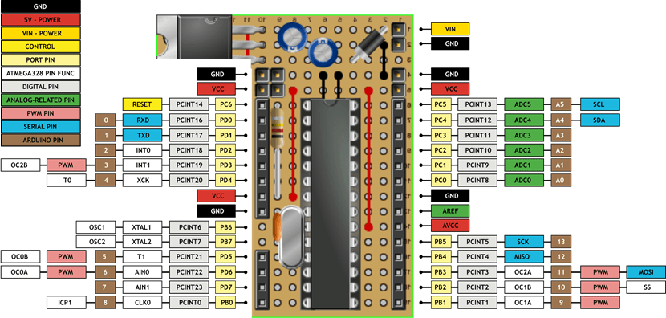

2015-06-02 - Nº 5
Editorial
E já faz um mês que se lançou a primeira Newsletter. Sempre a melhorar com artigos que captam a atenção e motivam o engenho. Esta Newsletter encontra-se mais uma vez disponível no sistema documenta do altLab. Todas as Newsletters encontram-se no link.
Esta Newsletter tem os seguintes tópicos:
- Novidades da Semana
- Ciência e Tecnologia
- Cursos MOOC
- Modelos 3D
- Open Source
- Circuitos
- Artigo do Maker
- Compras
- Ferramentas
Resolvi dedicar esta Newsletter ao Arduino. Foi graças a esse ecossistema de software e hardware que comecei a dar os meus primeiros passos no mundo da electrónica. Como não poderia deixar de ser o software que iremos falar é o Arduino IDE - O software que permite escrever os programas, compilá-los e instalá-los na flash do micro-controlador que se encontra no Arduino. Irei falar de um projeto que desenvolvi - o CSEduino - para ser possível construir um Arduino de baixo custo. Por fim iremos falar de alicates.
 João Alves ([email protected])
João Alves ([email protected])
O conteúdo da Newsletter encontra-se sob a licença  Creative Commons Attribution-NonCommercial-ShareAlike 4.0 International License.
Creative Commons Attribution-NonCommercial-ShareAlike 4.0 International License.
Novidades da Semana ^
-
"Samsung was shy on specs, but said the process node will be in full production by the end of 2016, about the same time as its rival TSMC. The Samsung 10nm process offers “significant power, area, and performance advantages” and targets a broad range of markets, said foundry senior vice president Hong Hao."
Cypress expands energy-efficient line of nonvolatile RAMs
"Cypress Semiconductor is sampling a 4-Mbit ferroelectric RAM (F-RAM), which is one of the industry’s highest density serial F-RAMs, featuring a 40-MHz serial peripheral interface (SPI) and a 2.0-V to 3.6-V operating voltage range. F-RAMs consume 200 times less energy than serial EEPROMs and 3000 times less energy than NOR flash devices. Further, Cypress F-RAMs are able to endure 100 trillion read/write cycles and provide 10-year data retention at 85°C and 151 years at 65°C."
A folding drone that's ready for takeoff in a snap
"Inspired by origami, the folding drone developed by a team at EPFL and NCCR Robotics unfurls and takes off in a third of a second. The moment it is turned on, the rotors engage, the articulated arms extend and the drone begins moving. This eager device could be quickly released in large numbers over a disaster zone in order to bring back photos and establish contact with people in need."
-

"Brillo extends the Android platform to all your connected devices, so they are easy to set up and work seamlessly with each other and your smartphone."
Avago technologies to acquire Broadcom for $37 billion
"Avago Technologies Limited (Nasdaq:AVGO) and Broadcom Corporation (Nasdaq:BRCM) today announced that they have entered into a definitive agreement under which Avago will acquire Broadcom in a cash and stock transaction that values the combined company at $77 billion in enterprise value. Upon completion of the acquisition, the combined company will have the most diversified communications platform in the semiconductor industry, with combined annual revenues of approximately $15 billion."
-
"The June edition of the official Raspberry Pi magazine has arrived. Here are just a few highlights: Windows 10 IoT Core comes to Raspberry Pi; Robot invasion has started!; Go from 0-100 in three seconds flat!; Write a Python Platform game; Win £300/$450 of PaPiRus ePaper HATs"
Ciência e Tecnologia ^
Here’s a detailed walk through of how jpeg compression works
"Understanding the science behind JPEG compression might not be on everyone’s agenda. In fact, it probably sounds incredibly boring, if not complicated to a lot of folks. But, in this 12-minute long clip, image analyst Mike Pound guides you through the entire process as he explains the magic of Discrete Cosine Transform (DCT)–using language that’s easy to follow. If you’ve been meaning to learn more about what happens to your images when you save them as JPEG, there’s no better time than the present."
Light-emitting, transparent flexible paper developed in China
"The first light-emitting, transparent, flexible paper made from environmentally friendly materials has been developed by scientists at Sichuan University in China, the scientists report in the journal ACS Applied Materials & Interfaces. Most current flexible electronics paper designs rely on petroleum-based plastics and toxic materials."
Printing 3-D graphene structures for tissue engineering
"Ever since single-layer graphene burst onto the science scene in 2004, the possibilities for the promising material have seemed nearly endless. With its high electrical conductivity, ability to store energy, and ultra-strong and lightweight structure, graphene has potential for many applications in electronics, energy, the environment, and even medicine."
This rigid plastic turns to clay in hot water, is three times stronger than rubber
"Ever tried to melt something plastic at home? It takes a fair amount of work. Not this new plastic product, though — it’ll go goopy just from taking a brief bath in hot water. A Japanese plastics company called Polysis is marketing a new product they call Haplafreely. It’s available as rigid sheets or as thin film on a roll, and it’s noteworthy for its ability to become malleable with a minimal amount of heat applied."
Robo-teamwork: Robotic cockroach used to launch robotic bird
"Walking and flying robots both have their use cases. A walking robot is efficient and easier to build, while a flying robot is faster and more versatile. There have been efforts to combine them into a single multi-modal unit, but the complexities make that less than ideal. That’s why robot teams, like this cockroach-bird pairing, are being investigated. This might offer the best of both worlds."
A new kind of wood chip: collaboration could lead to biodegradable computer chips
"In an effort to alleviate the environmental burden of electronic devices, a team of University of Wisconsin-Madison researchers has collaborated with researchers in the Madison-based U.S. Department of Agriculture Forest Products Laboratory (FPL) to develop a surprising solution: a semiconductor chip made almost entirely of wood."
Cursos MOOC ^
- Introduction to Computer Science and Programming Using Python - Começa a 10 de Junho.
- Introduction to Computer Programming, Part 1 - Começa a 16 de Junho.
- Programming Mobile Applications for Android Handheld Systems: Part 2 - Começa a 17 de Junho.
- An Introduction to Interactive Programming in Python (Part 2) - Começa a 11 de Julho.
- Creative Coding - Começa a 3 de Agosto.
Modelos 3D ^
Com a disponibilidade de ferramentas que permitem dar azo a nossa imaginação na criação de peças 3D e espaços como o thingiverse para as publicar, esta rubrica apresenta alguns modelos selecionados que poderão ser úteis.
Flexing battery holders with integrated spring (http://www.thingiverse.com/thing:456900)
For my electronic projects I often need battery holders of various size and for different number of cells: single, multiple cells in parallel or in series, or serial lithium-ion type cells with connectors for balanced charging between the cells.
So the project here was to generate fully parametrized, printable battery holders for cylindrical cells of arbitrary size and number. The additional challenge for me was to have the battery sit firmly in the holder without the use of the metallic spring that is usually found at the minus pole. In this design the metallic spring is replaced by a flexible printed curled structure, which presses the contacts firmly to the battery. This plastic spring flexes about 1 - 2mm, which is just what's needed to comfortably insert and remove the cells.
Folding Box for Arduino Uno (http://www.thingiverse.com/thing:527543)
Combines Arduino Uno and a breadboard in one compact box. Unlike jasonwelsh's folding arduino lab it has no storage for parts and you can't keep a shield on the arduino. That's because it is ment to be used with something like the Sidekick starter kit (that's where my breadboard came from). There are magnets to keep it closed while carrying. If you would like to change something, I've included SolidWorks files for the parts. I created this thing because I needed a box that wasn't so bulky because I carry it to school everyday.
Tool Carousel for small tools (http://www.thingiverse.com/thing:702912)
A storage solution for small pliers and tools. pliers can hang in the holes around the outside and larger tools and pencils can be placed in the center.
Open Source ^
Arduino IDE
O Arduino IDE é uma aplicação que existe para os vários ambientes - Linux, Windows e MAC e que permite escrever programas, compilá-los e gravá-los num micro-controlador.
Esta aplicação esteve durante muito tempo na versão 1.0.5 sendo que entretanto foi lançada a versão final da familia 1.6.x que se encontra atualmente na 1.6.4. Esta versão é a versão lançada pelos criadores originais - A Arduino.CC, esta versão pode ser descarregada neste link. Entretanto apareceu uma outra versão a 1.7.x que está na versão 1.7.4 e que foi lançada pela Arduino.org - a entidade que fabrica as placas em Itália. Esta versão pode ser descarregada deste link. Aparte estas confusões criadas pela disputa do trademark Arduino - ambas as versões funcionam sendo que a versão da familia 1.6 é a que a meu ver deverá ser usada uma vez que é a que tem os últimos desenvolvimentos e correções.
É uma ferramenta que permite a criação dos chamados sketchs que permitem materializar as instruções que o micro-controlador deverá executar. O IDE suporta um conjunto diverso de placas/micro-controladores e permite acrescentar inclusivamente suporte para novos micro-controladores.
A programação é feita em C/C++ com recursos a diversas bibliotecas para executar acções diversas sobre os I/Os dos micro-controladores. Estas bibliotecas podem igualmente ser descarregadas da Internet e acrescentadas ao IDE.
Qualquer programa em Arduino tem um ficheiro principal com a extensão INO ou a extensão antiga PDE.
A estrutura de um programa é a seguinte:
As duas funções são incorporadas no código final da seguinte forma:
- A função setup é executada uma única vez no inicio do programa - Serve essencialmente para código de inicialização
- A função loop é executada repetidamente logo após o setup
O Arduino IDE é um GUI que esconde a invocação do compilador (GCC) e do software que permite a gravação do código no micro-controlador (avrdude).
Este é uma ferramenta avançada que apenas interessa a quem quer fazer programas para correrem em micro-controladores. Os limites são a imaginação (o tamanho da memória flash ou o número de pinos de I/O). Existem milhares de projetos giros de explorar e de replicar que permitem fazer coisas tão diversas como abrir portas de garagens através de bluetooth ou controlar um sistema de rega de acordo com o nível de humidade da terra, etc.
Caso achem que é uma ferramenta apenas serve para aprendizagem ou para pequenas coisas, o firmware Marlin usado em algumas impressoras 3D é compilado com o Arduino IDE.
Links úteis:
Circuitos ^
Aqui é apresentado um circuito simples que poderá ser construído com componentes.
CSEduino em breadboard
O Circuito hoje apresentado é o circuito usado no CSEduino. Este circuito permite montar um "Arduino" numa breadboard ou numa Stripboard. Este circuito é construído a volta do micro-controlador usado no Arduino UNO - o ATmega328P-PU.
Este micro-controlador tem as seguintes características:
- Micro-controlador de 8-bits
- Arquitectura RISC
- 32 Kbytes Flash
- 2 Kbytes SRAM
- 1024 Bytes EEPROM
- 3 Contador/Timer de 8-bit/16-bit
- 6 Canais PWM
- 6 Canais ADC de 10-bit
- Interface I2C/TWI
- 14 I/O Programáveis
- Voltagem de Operação: 1.8-5.5V
- Velocidade: 0 - [email protected] - 5.5V, 0 - [email protected] - 5.5.V, 0 - 20MHz @ 4.5 - 5.5V
O Micro-controlador usa uma tensão de 5V e precisa de um interface "tipo" FTDI para ser programado.
Esquemático

Nota: No esquemático a parte do regulador de tensão foi omitida esta poderá ser consultada no circuito da Newsletter Nº3
Componentes (BOM):
- 1x micro-controlador ATmega328P-PU com bootloader optiboot (U1)
- 1x cristal de 16 MHz (Y1)
- 2x 22 pF, 50 V condensadores cerâmicos (C3, C4)
- 1x resistência de 10 kΩ (R2)
- 1x LED 3mm (D1)
- 1x resistência de 470Ω (R1)
- 1x SPST botão (SW1)
- 1x 100 nF, 50 V condensador cerâmico (C5)
Pin-out dos IC
Para testar o circuito foi carregado o Sketch do Blink.
Artigo do Maker ^
Projeto interessante publicado por um maker.
CSEduino 2

O CSEduino foi um projeto desenvolvido por mim e apresentado no Arduino Day 2014. A sua documentação detalhada encontra-se em CSEduino World.
Foi criado para fazer face ao problema do custo de uma placa Arduino. Para dar resposta à necessidade de poder incorporar um Arduino em cada projeto que faço, sem ter que gastar 20 ou mais euros no mesmo.
O Nome CSEduino vem das iniciais C-Cheap - Muito barata, S-Small - Pequena , E-Easy - Fácil.
Muito barata porque com um orçamento de cerca de 4€ consegue-se comprar os componentes para montar a placa.
Pequena porque a placa ocupa cerca de 4,5cm x 5,5cm versus o Arduino UNO que ocupa 7,5cm x 5,3 cm
Fácil porque foram apenas usados componentes THT - Through-hole technology, evitando o uso de SMD - Surface Mount Devices - uma vez que são mais difíceis de soldar.
Foi usado o micro-controlador mais comum usado nas placas Arduino com THT - o ATmega328P (em formato PDIP). Os componentes foram soldados a uma stripboard para evitar fios extra.
Este projeto foi desenhado inicialmente para ser possível montar o mesmo usando apenas componentes THT e sem ter que recorrer a placas PCB.
Ao longo da existência do projeto foram feitas diversas evoluções que se documentam abaixo:
A versão original dispunha de um LED ligado ao Pino 13 para o blink.
A Versão 2 teve por objectivo reduzir a altura dos componentes, nomeadamente do regulador de tensão.
Trouxe as seguintes alterações:
- Mudança da orientação do Regulador de Tensão
- Mudança da posição dos pinos do interface Série
- Menos Componentes (Tirou-se o LED do pino 13 e o Jumper)
- Menos Altura
- Mais pinos de GND e VCC
A versão 3 foi uma versão do CSEduino usando uma PCB de 1 camada.
As placas foram feitas no altlab com recurso a técnicas de laser indirect etching. A forma como foram feitas as placas relativamente às tradicionais é que foi usada a cortadora laser para retirar a tinta que foi colocada por cima da placa de cobre antes de ser feito o processo normal de etching.
O seu desenho pode ser descarregado no github
A versão 4 da placa é uma PCB de duas camadas que permite montar rapidamente a placa.
Foi fabricada na China a um custo muito aceitável. O custo não aumentou ficando em cerca de 4 €. Nesta versão a placa passou a ter 5 x 5 cm.
Com o mínimo de componentes esta placa é fácil de montar, barata e pequena.
Existem um conjunto de passos que têm que ser feitos para montar o CSEduino.
As instruções que apresento são para a versão 2 da placa que são praticamente idénticas às da versão 3 e 4. Os ficheiros necessários para produzir as placas desta versão encontram-se disponíveis no github.
Componentes
Os componentes que são necessários são os apresentados no capitulo do Circuito:
- 1x Stripboard com pelo menos 19 Linhas e 16 Colunas
- 1x micro-controlador ATmega328P-PU com bootloader optiboot (U1)
- 1x DIP IC Socket de 28 pinos
- 1x cristal de 16 MHz (XTAL1)
- 2x 22 pF, 50 V condensadores cerâmicos (C3, C4)
- 1x 7805 regulador de tensão linear (U2)
- 2x 100 μF, 25 V condensadores electrolíticos (C1, C2)
- 1x 1N4001 diodo retificador (D1)
- 1x SPST botão (S1)
- 1x resistência de 10 kΩ (R2)
- 1x 100 nF, 50 V condensador cerâmico (C5)
- 1x header de 1x6-pinos macho
- 4x header de 1x2-pinos macho
- 1x header de 1x14-pinos fêmea
- 1x header de 1x8-pinos fêmea
- 1x header de 1x4-pinos fêmea
Ferramentas
Para montar esta placa são necessários as seguintes ferramentas:
- Ferro de Soldar
- Cortador de pistas
- Alicate de corte
- Alicate de pontas
- X-Acto
- Solda
- Fios
Adicionalmente pode ser necessário:
- Multímetro
- Bomba Desoldadora
Passo 1 - Corte de pistas
Cortar as pistas do lado do cobre de acordo com a imagem.
Passo 2 - Fios e resistência
Virar a placa e colocar os fios e a resistência (de 10K Ohms) de acordo com a imagem.
Passo 3 - Diodo e socket
Colocar o Diodo (atenção que tem polaridade) e o socket para o Chip.
Passo 4 - Cristal e condensadores cerâmicos
Colocar o cristal, os condensadores cerâmicos de 22pF (Junto ao cristal) e o condensador cerâmico de 100nF.
Passo 5 - Botão e regulador linear de tensão
Colocar o botão e o regulador linear de tensão.
Passo 6 - Headers e Condensadores Electrolíticos
Colocar os headers e colocar os dois condensadores electrolíticos de 100µF.
Passo 7 - Micro-controlador
Colocar o micro-controlador.
Detalhes técnicos da placa

Da forma como o CSEduino foi desenhado e para o objectivo de manter o custo muito baixo este não é compatível com os shields do Arduino e não tem interface USB nativa para programação.
Tendo o header compatível com as placas FTDI e clones durante a programação pode ser encaixada uma destas placas. Estas placas têm um custo que não é desprezível e como tal incorporá-las aumentaria muito o custo do projeto.
Para que seja possível fazer a programação é necessário selecionar o Micro-controlador certo de acordo com o bootloader que foi carregado. Se o ATmega328P tem o Optiboot deverá ser selecionado o Arduino UNO.
Notas:
O Bootloader - Este código é executado logo após o arranque do micro-controlador. No caso do Arduino ele serve para que o Arduino possa entrar em modo programação. Conforme descrito aqui na página do optiboot a operação do optiboot consiste no seguinte:
- Quando arranca o optiboot detecta qual a razão do reset se não for por reset externo passa imediatamente o controlo ao programa.
- O LED de início cintila a indicar que o optiboot está a correr
- A interface Série - UART é configurada com um WDT (Watchdog Timer) de 1 segundo.
- O Optiboot tenta ler comandos da interface série. Os caracteres válidos fazem limpam o valor do contador do WDT e permitem que a flash seja programada.
- Sem caracteres válidos na interface série o contador do WDT pode expirar causando um reset ao Chip.
- Como o reset não é "externo" a aplicação é iniciada (1. passo).
Existem diversos projetos para colocar o bootloader em micro-controladores "virgens", destaco quatro que cobrem as várias possibilidades:
- Using an Arduino as an AVR ISP (In-System Programmer) - Usa um Arduino para fazer a programação através do interface ICSP - Requer ligação a um PC.
- Atmega bootloader programmer - Usa outro arduino mas faz o processo de forma automatizada - não requer PC.
- USBasp - USB programmer for Atmel AVR controllers - Usa uma placa dedicada (que tem um Atmega8) para fazer o trabalho ligado a um PC.
- Atmega fusebit doctor (HVPP+HVSP) – fix the fusebits - mostra como construir um programador de alta voltagem para fazer o reset aos fuses.
Os micro-controladores deste tipo têm uma outra configuração que é igualmente importante de observar - os Fuses. Estes permitem configurar a forma como o micro-controlador funcionará e parametrizar coisas como a dimensão do bootloader, a velocidade do relógio, etc.
O site Engbedded Atmel AVR Fuse Calculator permite calcular de forma simples os valores que os Fuses devem ter.
Por vezes os ATmega328P ficam desprogramados e é necessário reprogramar os fuses.
A página Arduino Default Fuse Settings apresenta os valores que deverão estar configurados no micro-controlador quando o mesmo está a funcionar em "modo" Arduino.
Para o Arduino UNO os fuses devem ter os seguintes valores:
- Low Fuse 0xFF
- High Fuse 0xDE
- Extended Fuse 0x05
Para verificar o estado do micro-controlador ATmega328P usando o comando avrdude e um interface USBasp pode ser executado o seguinte comando:
avrdude -p m328p -c usbasp -v
Este irá verificar o acesso ao micro-controlador e mostrar a informação do estado dos fuses.
Já passei por algumas situações onde o micro-controlador parecia não responder e o sintoma era:
Unable to program ATmega328P with arduino interface (usb)
avrdude: ser_recv(): programmer is not responding
avrdude: stk500_recv(): programmer is not responding
Para resolver o problema executei os seguintes comandos:
avrdude -p m328p -c usbasp -U lfuse:w:0xDF:m -U hfuse:w:0xDF:m -U efuse:w:0x01:m -U lock:w:0xFF:m
Usar o Arduino IDE para colocar o Bootloader ou executar o comando
avrdude -b 19200 -c usbasp -p m328p -F -v -e -U flash:w:optiboot_atmega328.hex -U efuse:w:0x05:m -U hfuse:w:0xD6:m -U lfuse:w:0xFF:m -U lock:w:0x0F:m
Por fim:
avrdude -v -p m328p -c usbasp -Pusb -U lfuse:w:0xFF:m -U hfuse:w:0xDE:m -U efuse:w:0x05:m -U lock:w:0x3F:m
Outros artigos/projetos interessantes de ler:
- PVC Pipe Based CNC Mill using Arduino
- Tiny 3D Engine on the ATmega328 (Arduino UNO)
- Digital voltmeter using arduino
Compras ^
Artigos do ebay ou de outras lojas online que poderão ser úteis em projetos.
5PCS NEW ATMEGA328P-PU ATMEL IC MCU 8BIT 32KB FLASH 28DIP
(http://www.ebay.co.uk/itm/171411808500) - US $8.33
USB2.0 6Pin CH340G Converter for STC Arduino PRO Instead CP2102 PL2303 To TTL WW
(http://www.ebay.co.uk/itm/121644386416) - £1.08
Features:
- 100% Brand new and high quality.
- Built-in USB to TTL Transfer chip.
- Designed to be used for USB to TTL electronic projects.
- TTL interface output, easy to connect to your MCU.
- Dual 3.3V and 5V Power output, work with 3.3v and 5v target device.
- The mini module is designed specifically for STC download and ARDUINO PRO, supports all series of STC microcomputer with cold start reset button
- Supports WIN7/VISTA/MAC/LINUX(32 bit /64 bit system)
- USB to TTL conversion board used for STC microcontroller download DVD/ hard disk / router /GPS upgrade
- Package weight: 19g
- Size:57(mm)x17(mm)
- 1*USB 2.0 To TTL 6Pin CH340G Converter
- 1*Cable
USB Logic Analyzer Device Set USB Cable 24MHz 8CH 24MHz for ARM FPGA
(http://www.ebay.co.uk/itm/151581111210) - £5.62
Description
- Sampling rate up to: 24 MHz , can be 24MHz. 16MHz, 12MHz, 8MHz, 4MHz, 2MHz, 1MHz, 500KHz, 250KHz, 200KHz, 100KHz, 50KHz, 25KHz;
- The logic for each channel sampling rate of 24M/s. General applications around 10M, enough to cope with a variety of occasions;
- 8-channel;
- Voltage range:
- Input voltage range: -0.5V to 5.25V
- Input Low Voltage: -0.5V to 0.8V
- Input High Voltage: 2.0V to 5.25V
- Works with 5V, 3.3V, 2.5V, 2.0V systems. May work with 1.8V but not recommended.
- Input Impedance: 1Mohm || 10pF (typical, approximate)
- Crystal: +/-20ppm, 24MHz
- Error/Accuracy: pulse-width measurement: +/- 42ns (at 24MHz).
Package included:
- 1 x Analyser Device
- 1 x USB Cable
- 10 x Dupont Line
USBASP USBISP AVR Programmer Adapter 10 Pin Cable USB ATMEGA8 ATMEGA128
(http://www.ebay.co.uk/itm/201035834899) - US $1.94

Description:
- USBasp USBISP 3.3V / 5V AVR Programmer USB ATMEGA8（L）
Product information
- On-board ATMega8 （L）
- With power and programming indicator light
- On-board overcurrent protection
- Support 5V and 3.3V power supply
- Chip support:
- 51 serials： AT89S51, AT89S52, AT89S53, AT89S8252
- AVR serials： ATTiny12(L), ATTiny13(V), ATTiny15(L), ATTiny24(V), ATTiny25(V), ATTiny26(L), ATTiny2313(V), ATTiny44(V), ATTiny45(V), ATTiny84(V), ATTiny85(V), AT90S2313(L), AT90S2323(L), AT90S2343(L), AT90S1200(L), AT90S8515(L), AT90S8535(L), ATMEGA48(V), ATMEGA8(L), ATMEGA88(V), ATMEGA8515(L), ATMEGA8535(L), ATMEGA16(L), ATMEGA162(V), ATMEGA163(L), ATMEGA164(V), ATMEGA165(V), ATMEGA168(V), ATMEGA169(V), ATMEGA169P(V), ATMEGA32(L), ATMEGA324(V), ATMEGA325(V), ATMEGA3250(V), ATMEGA329(V), ATMEGA3290(V), ATMEGA64(L), ATMEGA640(V), ATMEGA644(V), ATMEGA645(V), ATMEGA6450(V), ATMEGA649(V), ATMEGA6490(V), ATMEGA128(L), ATMEGA1280(V), ATMEGA1281(V), ATMEGA2560(V), ATMEGA2561(V), AT90CAN32, AT90CAN64, AT90CAN128, AT90PWM2(B), AT90PWM3(B) and so on.
Ferramentas ^
As Ferramentas que usamos no dia-a-dia explicadas ao detalhe.
Alicates
O alicate é uma ferramenta manual que permite multiplicar a força aplicada nas hastes às pontas do mesmo. São alavancas e têm diversas funcionalidades. São muito usados em trabalhos de mecânica, electricidade e electrónica.
Inicialmente foram usados como extensões dos nossos membros para agarrar materiais muito quentes. Há documentação que indica que este tipo de ferramentas existe desde a Idade do Bronze. Inicialmente seriam o que hoje se designam por tenazes mas ambos têm o mesmo principio.
Um alicate é composto por três partes básicas: a cabeça, a parte articulada e os cabos.
Em termos de tipos existem basicamente três tipos de alicates:
- De Corte
- De Pressão
- Universais
Os alicates de corte servem para cortar o material que é agarrado pela cabeça.
Os alicates de pressão servem para segurar, fixar ou prender e travar materiais.
Os alicates universais permitem executar ambas as funções, corte ou pressão.
Existem alicates que devido ao tipo de trabalho que fazem têm um isolamento elétrico.
Para mais informações:
That's all Folks!